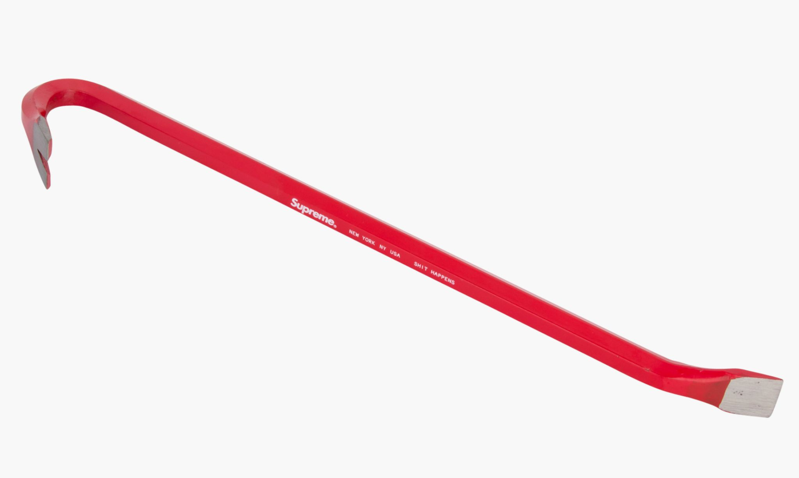

What even is a crowbar?
To the simple-minded, a crowbar may be nothing but a bent piece of iron that is used to open or pry things. But to us more educated folk, the crowbar is seen as an insturment of immeasurable utility and wonder.
Not only is the crowbar an amazing tool, it is also shouded in mystery! Although we are unsure who created the first crowbar, we do know of the first record of one ever being used. The year was 1748, in France. They were straight pieces of metalk which were used to rob ships and break through doors. However, the glory of a crowbar swiftly diminished in the eyes of many people, seen as only a took to open crates and nothing much more. We are also unsure of why it is even called a crowbar in the first place. We suspect that whoever named it had some coorilation between it and crows, perhaps due to its wedge shaped end that could have looked like a crow's feet or beak.